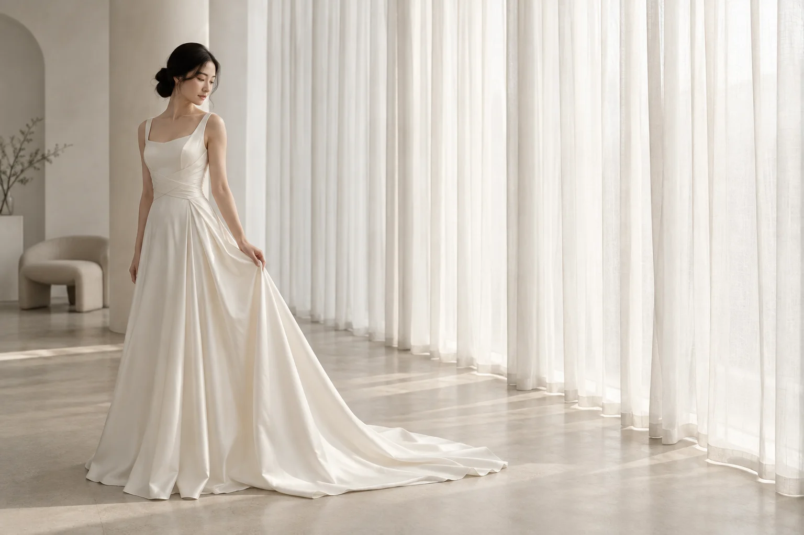
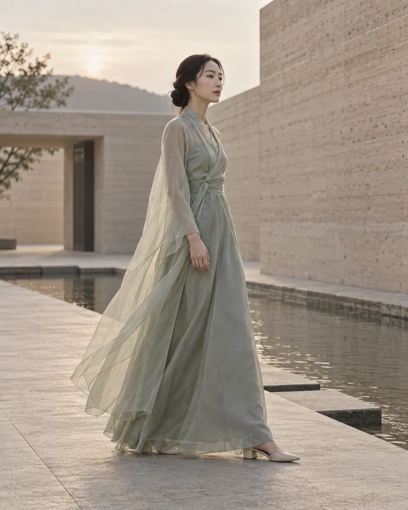
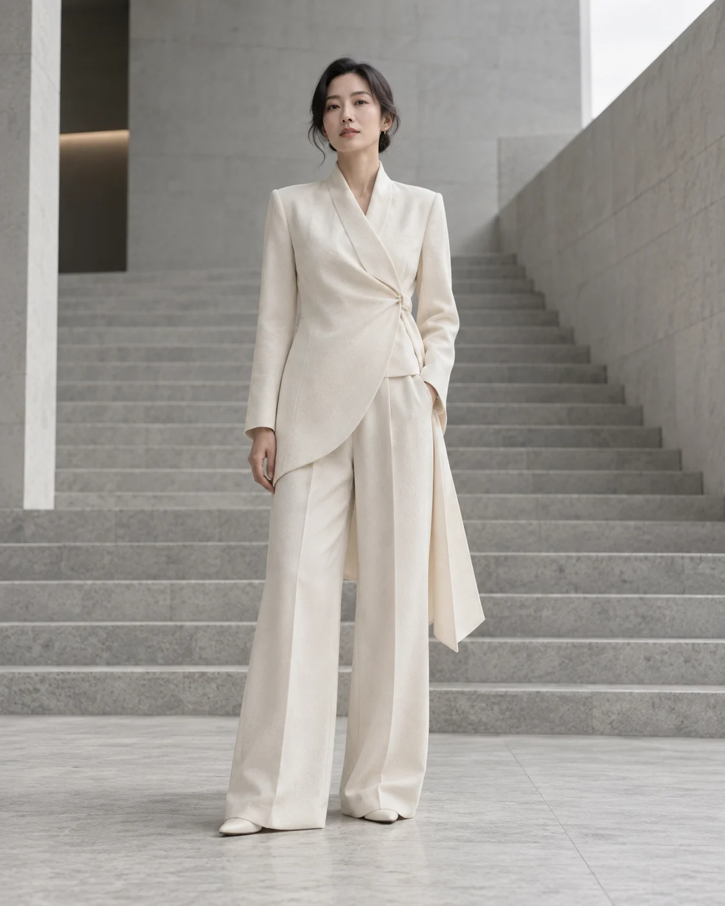

Personal Color
피부 톤과 전체 인상을 세심하게 살펴 가장 자연스럽게 빛나는 색을 찾습니다.

OUR STORY
Silhouette of Beauty
WHY SILUA
예쁜 옷은 많지만, 정작 나에게 어울리는 옷을 찾기는 쉽지 않습니다. 실루아는 그 작은 고민에서 출발했습니다.
한국의 미와 절제된 미감에서 영감을 받아 전통의 결을 현대적인 웨딩과 드레스 실루엣으로 재해석합니다. 유행을 좇기보다 한 사람의 분위기, 체형, 피부 톤, 그리고 옷을 입을 장면을 먼저 바라봅니다.

“당신이 가장 당신다운 모습으로
빛나는 순간을 위해.”
OUR APPROACH
디자인보다 먼저 사람을 보고,
옷보다 먼저 순간을 듣습니다.
피부 톤과 전체 인상을 세심하게 살펴 가장 자연스럽게 빛나는 색을 찾습니다.
감추기보다 장점을 드러내는 비례와 선을 찾아 편안하고 단정한 핏을 제안합니다.
셀프 웨딩, 스냅, 가족 행사, 이브닝 등 그날의 장면에 어울리는 전체 스타일을 완성합니다.
드레스와 액세서리가 서로 이어지도록 필요한 디테일을 한 사람의 취향에 맞춥니다.
OUR PHILOSOPHY
실루아가 생각하는 우아함은 화려함의 크기가 아닙니다. 불필요한 것을 덜어낸 선, 움직일 때 자연스럽게 살아나는 곡선, 오래 보아도 편안한 색 안에서 한 사람의 존재가 선명해지는 것. 그것이 우리가 만드는 실루엣입니다.


FOR WHOM
셀프 웨딩과 스냅을 준비하는 예비 신부, 연주회와 파티를 앞둔 분, 격식을 갖추면서도 나만의 분위기를 잃고 싶지 않은 분을 위해 준비합니다.
1:1 스타일링 상담